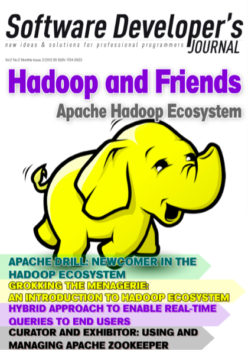

1 我是谁(Who Am I)
王福强，A Writer, A Fighter, A Programmer And A Teacher， 《Spring揭秘》和《SpringBoot揭秘》作者，杭州征数科技技术负责人，浸淫Java平台多年，然近年更喜Scala， 专注于并发并行编程，HPC，分布式系统设计与实现，Big Data， 实时数据追踪与计算等领域, 相关Web Framework, DDAL(Distributed Data Access Layer)1, Middleware的Product Owner/Co-owner.
互联网和金融领域涉猎居多，参与并领导过包括信贷，债券，外汇(保证金)交易等多种金融系统的设计与开发工作;
年轻时好武，玩过散打，拳击，跆拳道，太极，终无定性；
亦好文，好藏书，之前看技术书居多，现尝试更往杂里读；
- 原挖财技术VP及首席架构师(Chief Architect)，带领技术团队走出荒蛮，将整个挖财新一代技术研发体系规划并落地；
- 原天猫产品技术部导购部资深架构师，兼顾负责SEO/流量拓展相关工作， 规划并推动了统一投放平台的整体落地， 即使再规划和推动"reactive tmall"的idea，也已经不会给我带来更大的满足感，所以最终选择了离开；
- 原阿里巴巴平台技术部海量数据部门高级技术专家，专注打造数据中间件与产品服务化；
2 我的著作
2.1 《Spring揭秘》

2.2 《SpringBoot揭秘》

2.3 《Real World Scala》
Real World Scala本来希望对Scala的整体生态环境进行一个实践性的介绍，不过，暂时只有SBT一章算较为圆满的完成，后面是否继续看心情 ;)
2.4 Our Story With Zookeeper
发表于Software Developer's Journal杂志的一篇文章，介绍了我们在alibaba b2b平台部门时候使用Zookeeper的一些实践和故事。

3 我在线上
- 微博 - [@王福强](http://www.weibo.com/fujohnwang)
- slideshare - 如果各位看官对偶之前的一些
骗骗他(PPT)感兴趣的话，可以参看
https://github.com/alibaba/cobarclient, 原有域名阿里内部已经弃用，很多同学又很懒（人性啊~）， 所以， 我还是编译一份文档供参考吧， 中文参考文档看这里，英文参考文档(Reference Doc)看这里↩